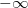
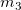
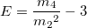
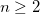
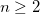

Diese Seite ist nur in OriginPro verfügbar. Dies ist im Dialog Peaks analysieren nur verfügbar, wenn Peaks anpassen als Ziel auf der Seite Ziel ausgewählt ist. Es führt die Anpassung bei den Peaks durch, die auf der Seite Peaks suchen gefunden werden.
| An Spektrum ausrichten |
Aktivieren Sie dieses Kontrollkästchen, um festzulegen, ob Sie die Ankerpunkte des Peakzentrums an den Spektrumsdaten ausrichten möchten. Wenn diese Option aktiviert ist, werden die Ankerpunkte des Peakzentrums in das Spektrum gezogen, sobald Sie sie hinzufügen oder verschieben. |
| Peaks |
Klicken Sie auf die Schaltfläche Hinzufügen, um Peaks manuell hinzuzufügen. Oder klicken Sie auf die Schaltfläche Ändern/Entf, um Peaks manuell zu ändern oder zu löschen. |
| Residuen zeigen |
Legt fest, ob das aktuelle Residuendiagramm gezeigt werden soll oder nicht. |
| 2. Ableitung zeigen |
Legt fest, ob die zweite Ableitung der Spektrumsdaten gezeigt werden soll oder nicht. |
| Bericht aus aktuellem Anpassungsergebnis erzeugen |
Wenn dieses Kontrollkästchen aktiviert ist, wird der Ergebnisbericht generiert, nachdem Sie auf die Schaltfläche Fertig geklickt haben, auch wenn die Anpassung nicht konvergiert. Ansonsten wird der Ergebnisbericht nur generiert, wenn die Anpassung konvergiert. |
| Fit-Steuerung |
Klicken Sie auf diese Schaltfläche, um den Dialog Peak-Fit Parameter zu öffnen, wodurch Sie die Anpassung steuern können. Weitere Einzelheiten finden Sie hier. |
| Fit |
Klicken Sie auf diese Schaltfläche, um die Anpassung auszuführen. |
| Datensatzidentifizierer |
Der Identifizierer für die Quelldatensätze wird festgelegt.
-
Identifizierer
- Es kann ein Typ für die Informationen der Quelldatensätze ausgewählt werden. Der Identifizierer kann Bereich, Mappenname, Blattname, Name (Verwenden Sie den Langnamen der entsprechenden Spalte, wenn es einen Langnamen gibt, ansonsten verwenden Sie den Kurznamen der Spalte.), Kurzname, Langname, Einheiten, Kommentare, <Benutzerdefiniert> sein (Informationen zur Verwendung können Sie unter Erweiterte Anpassungen des Legendentexts lesen).
-
Identifizierer im Ergebnisblatt
- Legen Sie fest, ob der Datensatzidentifizierer im Ergebnisblatt verwendet wird.
|
| Berichtstabellen/Tabelle Peaks/Angepasste Kurven |
Legt das Ziel von Berichtstabellen/Tabelle Peaks/Angepasste Kurven fest. Berichtstabellen speichert umfassende Ergebnisse für die Peakanpassung. Tabelle Peaks speichert Peakinformationen. Angepasste Kurven speichert die Daten für Basislinie und angepasste Kurven.
-
Mappe
-
- <Kein>: Berichtstabellen/Tabelle Peaks/Angepasste Kurven werden nicht ausgegeben.
- <Auto>: Wenn eine Quellenarbeitsmappe verfügbar ist, wird sie als Ausgabe verwendet; ansonsten wird eine neue Arbeitsmappe erstellt und als Ausgabe verwendet.
- <Quelle>: Die Arbeitsmappe mit den Quelldaten
- <neu>: Eine neue Arbeitsmappe
- <existiert>: Eine festgelegte existierende Arbeitsmappe
- Mappenname
- Blatt: Das Zielarbeitsblatt. Diese Option ist immer <neu>.
- Blattname
- Ergebnisfenster (nur Berichtstabellen): Bericht im Ergebnisfenster ausgeben
- Skriptfenster (nur Berichtstabellen): Bericht im Skriptfenster ausgeben
-
Notizfenster (nur Berichtstabellen): Diese Auswahlliste verwenden, um das Ziel des Notizfensters festzulegen.
-
- <Keine> (nur Berichtstabellen): Nicht in Notizfenstern ausgeben
- <neu> (nur Berichtstabellen): In einem neuen Notizfenster ausgeben
|
| Anpassungsresiduen |
Legt die Zielarbeitsmappe und -arbeitsblätter für die Residuenwerte fest.
-
Mappe
-
- <Angepasster Wert>: Die Arbeitsmappe, in der die angepassten Werte ausgegeben werden
- <neu>: Eine neue Arbeitsmappe
- <existiert>: Eine festgelegte existierende Arbeitsmappe
- Mappenname
-
Blatt
-
- <Angepasster Wert>: Das Arbeitsblatt, das die angepassten Werte enthält
- <neu>: Ein neues Arbeitsblatt
- <existiert>: Ein festgelegtes existierendes Arbeitsblatt
- Blattname
|
| Subtrahierte Daten |
Diese Option ist nur verfügbar, wenn eine Basislinie subtrahiert wurde und das Kontrollkästchen Basislinie hinten einfügen deaktiviert ist. Legt die Zielarbeitsmappe und -arbeitsblätter für die subtrahierten Daten fest.
-
Mappe
-
- <Angepasster Wert>: Die Arbeitsmappe, in der die angepassten Werte ausgegeben werden
- <neu>: Eine neue Arbeitsmappe
- <existiert>: Eine festgelegte existierende Arbeitsmappe
- Mappenname
-
Blatt
-
- <neu>: Das Arbeitsblatt, das die angepassten Werte enthält
- <existiert>: Eine festgelegte existierende Arbeitsmappe
- Blattname
|
| Daten der Basislinie |
Dies ist nur verfügbar, wenn eine Basislinie subtrahiert wurde und das Kontrollkästchen Basislinie hinten einfügen aktiviert ist. Legt die Zielarbeitsmappe und -arbeitsblätter für die Daten der Basislinie fest.
-
Mappe
-
- <Angepasster Wert>: Die Arbeitsmappe, in der die angepassten Werte ausgegeben werden
- <neu>: Eine neue Arbeitsmappe
- <existiert>: Eine existierende Arbeitsmappe
- Mappenname
-
Blatt
-
- <neu>: Das Arbeitsblatt, das die angepassten Werte enthält
- <existiert>: Eine festgelegte existierende Arbeitsmappe
- Blattname
|
| Zu berechnende Eigenschaften |
Legt die zu berechnenden Eigenschaften fest und zeigt sie im Anpassungsbericht an.
-
Fit-Parameter
- Wert: Parameterwert
- Geteilt: Wenn der Parameter nicht geteilt wird, ist dies 0. Ansonsten weist dieser Wert auf den Index des Peaks hin, dessen entsprechender Parameter mit dem Parameter geteilt wird.
- Fest: Legt fest, ob der Parameter fest ist.
- Standardfehler: Standardfehler der Parameter
- UEG: Die untere Konfidenzgrenze
- OEG: Die obere Konfidenzgrenze
- Konfidenzniveau für Parameter (%) Das Konfidenzniveau für Regression
- t-Wert: Wert des t-Tests der Parameter
- Wahrsch.>|t|: p-Wert der Parameter
- Abhängigkeit: Die Abhängigkeitswerte der Parameter
- KI halbe Breite: Halbe Breite des Konfidenzintervalls
- Untere Schranke: Untere Schranke
- Obere Schranke: Obere Schranke
-
Statistik zum Fit
- Anzahl der Punkte: Gesamtanzahl der Anpassungspunkte
- Freiheitsgrade: Freiheitsgrade des Modells
- Chi-Quad. Reduziert: Der Wert des reduzierten Chi-Quadrats
- R-Wert: Der R-Wert, gleich der Quadratwurzel von

- Summe der Fehlerquadrate: Summe der Fehlerquadrate (RSS) oder Fehler der Summe der Quadrate
- R-Quadrat (COD): Determinationskoeffizient
- Kor. R-Quadrat: Korrigierter Determinationskoeffizient
- Wurzel-MSE Residuale Standardabweichung oder Quadratwurzel des mittleren quadratischen Fehlers
- Anzahl der Iterationen: Anzahl der Iterationen, die durchgeführt wurden
- Fit-Status: Der Status der Anpassung
- ANOVA: Ausgabe der Tabelle der Varianzanalyse
- Kovarianzmatrix: Ausgabe der Kovarianzmatrix
- Korrelationsmatrix: Ausgabe der Korrelationsmatrix
Weitere Einzelheiten finden Sie in der Berechnung hier.
|
| Peakeigenschaften |
Legt die Eigenschaften der Peaks fest, die berechnet und im Bericht angezeigt werden sollen.
- Peakindex: Die Indizes der Peaks
- Funktionstyp Peak: Die Funktion, die verwendet wurde, um den Peak anzupassen (Im Berichtstabellenblatt wird diese Spalte als Peaktyp bezeichnet.)
- Fläche Peak nach Fit: Integration zum Suchen der Fläche zwischen der Peakfunktion und der Basislinie mit Hilfe der Parameterwerte, die aus dem Fit ermittelt wurden. Die Integration wird von  bis
 durchgeführt. (Im Berichtstabellenblatt wird diese Spalte Fläche Fit genannt.) durchgeführt. (Im Berichtstabellenblatt wird diese Spalte Fläche Fit genannt.)
- Fläche Peak nach Fit, enthalten im Fit-Bereich: Integration zum Suchen der Fläche zwischen der Peakfunktion und der Basislinie mit Hilfe der Parameterwerte, die aus dem Fit ermittelt wurden. (Im Berichtstabellenblatt wird diese Spalte Fläche FitT genannt.)
- Fläche Peak nach Fit, enthalten im Fit-Bereich (%): Integration zum Suchen der Fläche zwischen der Peakfunktion und der Basislinie mit Hilfe der Parameterwerte, die aus dem Fit ermittelt wurden. Die Integration wird nur innerhalb des Datenbereichs durchgeführt. Das Ergebnis wird als Prozent der Gesamtfläche ausgegeben. (Im Berichtstabellenblatt wird diese Spalte Fläche FitTP genannt.)
- Peakfläche durch Integrieren der Daten: Integration zum Suchen der Fläche zwischen den angepassten Peakdaten und der Basislinie. Die angepassten Peakdaten entsprechen Fit Peak # (Langname) im Ausgabeblatt FitPeakCurve#. Die Integration wird nur innerhalb des Datenbereichs durchgeführt. (Im Berichtstabellenblatt wird diese Spalte Fläche Intg. genannt.)
- Peakfläche durch Integrieren der Daten (%): Integration zum Suchen der Fläche zwischen den angepassten Peakdaten und der Basislinie. Die angepassten Peakdaten entsprechen Fit Peak # (Langname) im Ausgabeblatt FitPeakCurve#. Die Integration wird nur innerhalb des Datenbereichs durchgeführt. Das Ergebnis wird als Prozent der Gesamtfläche ausgegeben. (Im Berichtstabellenblatt wird diese Spalte Fläche IntgP genannt.)
- Stelle von maximaler Höhe des Peaks: Der X-Wert für das Maximum des Peaks (Im Berichtstabellenblatt wird diese Spalte Zentrum Max. genannt.)
- Peak Schwerpunkt Zentrum: Der X-Wert des Peakzentrums des Schwerpunkts (
 ) Siehe das untenstehende Moment 3. Ordnung. (Im Berichtstabellenblatt wird diese Spalte Zentrum Grvty genannt.) ) Siehe das untenstehende Moment 3. Ordnung. (Im Berichtstabellenblatt wird diese Spalte Zentrum Grvty genannt.)
- Peak Maximum Höhe: Der Y-Wert für das Maximum des Peaks (Im Berichtstabellenblatt wird diese Spalte Max Höhe genannt.)
- Volle Breite bei halbem Maximum: Die Peakbreite bei halbem Wert des Peakmaximums (im Berichtsarbeitsblatt wird diese Spalte FWHM genannt).
- Breite bei: Legt fest, ob das Textfeld Breite bei(% von Max Peak) aktiviert wird oder nicht.
- Breite bei (% von Max Peak): Die Peakbreite bei n% des maximalen Peakwerts, wobei n der in dieses Textfeld eingegebene Wert ist (Im Berichtstabellenblatt wird diese Spalte als BreiteAtP bezeichnet.)
- Fläche oberhalb: Legt fest, ob das Textfeld Fläche oberhalb (% von Peak Maximum) aktiviert wird.
- Fläche oberhalb (% des Peak Maximum): Die Peakbreite oberhalb von n% des maximalen Peakwerts, wobei n der in dieses Textfeld eingegebene Wert ist (im Berichtsarbeitsblatt wird diese Spalte als AreaAbove)
- Kumulative Fläche zu: Legt fest, ob das Textfeld Kumulative Fläche zu (Relativ zum Zentrum) aktiviert wird.
- Kumulative Fläche zu (Relativ zum Zentrum): Die kumulative angepasste Fläche von bis X, wobei X der in dieses Textfeld eingegebene Wert ist und als ein festgelegter Wert relativ zum Peakzentrum betrachtet wird (Im Berichtsblatt wird diese Spalte als CumArea bezeichnet).
- Peak Varianz: Varianz der Funktion, die das zweite Moment ist (). Siehe Moment 3. Ordnung unten (im Berichtsblatt wird diese Spalte als Varianz bezeichnet).
-
Peak Verzerren: Fisher-Verzerrung, ein Maß des Asymmetriegrades des Peaks
 - wobei  das Moment der 3. Ordnung und das Moment der 2. Ordnung ist. Ihre Berechnungen können Sie unten sehen.
- (Im Berichtstabellenblatt wird diese Spalte Verzerren genannt.)
-
Überschuss Peak: Fisher-Kurtosis, misst die Langseitigkeit oder die Spitzheit des Peaks im Verhältnis zur Normal- oder Gaussian-Verteilung mit dem gleichen Mittelwert und Varianz.
- 
- wobei das Moment der 4. Ordnung und das Moment der 2. Ordnung ist. Ihre Berechnungen können Sie unten sehen.
- (Im Berichtstabellenblatt wird diese Spalte Überschuss genannt.)
-
Auflösung mit nächstem benachbarten Peak
}") - wobei und
 Peakzentren und Peakzentren und  und und  konstruierte Basisbreiten sind. konstruierte Basisbreiten sind.
- (Im Berichtstabellenblatt wird diese Spalte Auflösung genannt.)
-
Moment 3ter Ordnung:
- Die Momente sind wie folgt definiert:
dx") (0-tes Moment oder die Peakfläche) (0-tes Moment oder die Peakfläche)
x^ndx") , wobei (nte Nullpunktmoment) , wobei (nte Nullpunktmoment)
(x-m_1')^ndx") , wobei ((ntes zentrales Moment) , wobei ((ntes zentrales Moment)- (Im Berichtstabellenblatt wird diese Spalte Moment3 genannt.)
-
Moment 4ter Ordnung:
- Das Moment vierter Ordnung Siehe das obenstehende Moment 3. Ordnung. (Im Berichtstabellenblatt wird diese Spalte Moment4 genannt.)
-
Berechnungsmethode der Momente:
-
Dies ist nur verfügbar, wenn mindestens eins der folgenden Kontrollkästchen aktiviert ist: Peak Verzerren, Überschuss Peak , Auflösung mit nächstem benachbarten Peak, Moment 3ter Ordnung und Moment 4ter Ordnung. Sie können diese Auswahlliste verwenden, um die Methode zur Berechnung der Peakeigenschaften verbunden mit den Momenten auszuwählen. Zwei Optionen sind verfügbar:
- Entwurfsmodus (Numerisches Integral): Verwenden Sie die Trapezregel, um die Integration auf Datensätze bei der Berechnung von Momenten durchzuführen.
- Genauer Modus (Funktionsintegral): Verwenden Sie die Funktionsdefinition zum Berechnen der Momente. Diese Methode ist genauer als der Entwurfsmodus.
- Hinweis: Bei einem Peak, den Sie mit GaussAmp, Gaussian, Lorentz oder BiGaussian anpassen, wird die Auswahl in dieser Auswahlliste nicht angewendet. Origin verwendet stattdessen die angepassten Parameter, um die Momente zu berechnen.
-
Y-Maximum:
- Das Y-Maximum (mit Basislinie) für jeden gefundenen Peak wird ausgegeben.
|
| Zusammenfassungsdiagramm erstellen |
Legt fest, ob ein Berichtsdiagramm erstellt werden soll.
- Keine: Es wird kein Berichtsdiagramm erstellt.
- Neue Grafik: Es wird ein neues Berichtsdiagramm erstellt.
- Quelldiagramm: Nur verfügbar, wenn die Quelldaten aus dem Diagramm stammen. Das Quelldiagramm wird als Berichtsdiagramm verwendet.
|
| Ergebnistabelle |
Diese Option ist nur verfügbar, wenn für Zusammenfassungsdiagramm erstellen die Option Neue Grafik oder Quelldiagramm ausgewählt wurde. Verwenden Sie diese Auswahlliste, um anzugeben, ob die Ergebnistabelle im Berichts-/Zusammenfassungsdiagramm gezeigt werden soll.
-
- Es wird keine Anpassungsergebnistabelle zum Diagramm hinzugefügt.
- Es wird eine Anpassungsergebnistabelle zum Zusammenfassungsdiagramm hinzugefügt.
- Es eine Anpassungsergebnistabelle zu den eingebetteten Diagrammen im Berichtsblatt hinzugefügt.
- Zusammenfassungs- und Berichtsdiagramme
- Es wird eine Anpassungsergebnistabelle zum Zusammenfassungsdiagramm und zum Berichtsdiagramm hinzugefügt.
- Tabellenstilvorlage: Legt die Tabellenvorlage (*.OTW) fest, die zum Zeigen der Ergebnisse in das Diagramm verwendet wird. Standardmäßig wird die Systemvorlage verwendet. Die Tabellenvorlage sollte im Origin-Installationsordner abgelegt werden, um direkt nach Name verwendet werden zu können, z. B. MyTable.otw.
- Mengen in Tabelle: Die in der Tabelle gezeigten Eigenschaften werden festgelegt, indem sie im Format *Abkürzung Eigenschaft eingegeben werden. Sie können auf die Schaltfläche neben dem Bearbeitungsfeld klicken, um den Dialog Mengen in Tabelle aufzurufen und Eigenschaften hinzuzufügen/zu entfernen/zu ordnen.
|
| Angepasstes Kurvendiagramm |
Ist dieses Kontrollkästchen aktiviert, werden die angepassten Kurven ausgegeben und unter diesem Zweig werden Einstellmöglichkeiten verfügbar. Andernfalls werden die angepassten Kurven nicht ausgegeben und andere Einstellungen sind nicht verfügbar.
-
Kurven zeichnen: Verwenden Sie diese Auswahlliste, um die zu zeichnenden Kurven auszuwählen.
-
- Einzelne Peakkurve: Eine Kurve für jeden einzelnen Peak
- Kumulative Kurve: Kumulative Kurve für alle Peaks
- Beide: Es wird sowohl die einzelne Peakkurve als auch die kumulative Kurve gezeichnet.
- Separate X-Daten für einzelnen Peak verwenden: Es werden separate X-Daten für einzelne Peaks verwendet, so dass jeder angepasste Peak seine individuelle X-Datenspalte hat. Wenn dieses Kontrollkästchen deaktiviert ist, werden alle Peaks die gleiche X-Datenspalte teilen.
- X-Datenpunkte für einzelnen Peak: Nur verfügbar, wenn das Kontrollkästchen Separate X-Daten für einzelnen Peak verwenden aktiviert ist. Legt die Anzahl der Datenpunkte für die X-Spalte für jeden Peak fest.
- Basislinie hinten hinzufügen: Legt fest, ob die Basislinie zu den angepassten Kurven und der Spektrumskurve hinzugefügt werden soll, falls die Basislinie von den Quelldaten subtrahiert wurde.
- In Berichtstabelle zeichnen: Legt fest, ob die Diagramme in die Berichtstabelle eingefügt werden sollen.
- Stapel mit Residuen- vs. Unabhängigen Diagrammen: Die angepasste Kurve mit den Residuen- vs. unabhängigen Diagrammen wird gestapelt.
- Legende im Originaldiagramm aktualisieren: Legt fest, ob die Legende im Quelldiagramm automatisch aktualisiert wird. Diese Option ist nur verfügbar, wenn für Zusammenfassungsdiagramm erstellen die Option <Quelldiagramm> ausgewählt wurde.
-
X-Datentyp: Legt fest, wie die X-Werte der angepassten Kurve erzeugt werden sollen:
-
- Einheitlich Linear: Die X-Werte der angepassten Kurve werden in einer äquidistant verteilten linearen Skala gezeichnet.
- Log: Die X-Werte der angepassten Kurve werden in einer logarithmischen Skala gezeichnet.
- Das Gleiche wie die Eingabedaten: Die X-Werte der angepassten Kurve sind die gleichen wie die X-Eingabewerte.
- Skalierungstyp des Quelldiagramms verwenden: Die X-Werte der angepassten Kurve verwenden den gleichen Skalierungstyp wie die Quellkurve.
- Kurvenform folgen: Die X-Werte der angepassten Kurve werden intelligent berechnet, so dass die angepasste Kurve der Form der Quellkurve folgt. Dies ist sehr nützlich, wenn die Form der Quellenkurve sich in einigen Bereichen schnell ändert. Das Zentrum mehrere Peaks liegt zum Beispiel in einem kurzen X-Bereich.
-
Punkte
- Dieses Bedienelement ist nur verfügbar, wenn für X-Datentyp entweder Einheitlich Linear oder Log gewählt wurde. Es legt die Gesamtanzahl der Datenpunkte in einer angepassten Kurve fest.
-
Bereich
-
Dieses Bedienelement ist nur verfügbar, wenn für X-Datentyp entweder Einheitlich Linear oder Log gewählt wurde. Es legt den Bereich der X-Werte der angepassten Kurve fest. Wählen Sie eine der folgenden Optionen aus:
- Eingabedatenbereich + Grenze verwenden: Verwendet den X-Bereich der Eingabedaten und der Bereichsgrenze, angegeben in dem untenstehenden Textfeld Bereichsrand (%).
- Ausweiten auf gesamten Achsenbereich: Weitet die X-Werte auf den gesamten Achsenbereich aus.
- Benutzerdefiniert: Geben Sie die minimalen und maximalen X-Werte in die untenstehenden Eingabefelder Min und Max ein.
- Bereichsrand (%): Dieses Bedienelement ist nur verfügbar, wenn der X-Datentyp entweder Einheitlich Linear oder Log ist und Eingabedatenbereich + Grenze verwenden für Bereich gewählt wurde. Es legt den Bereichsrand fest, in dem die angepassten Kurven liegen.
- Min: Dieses Textfeld ist nur verfügbar, wenn der X-Datentyp entweder Einheitlich Linear oder Log ist und Benutzerdefiniert für Bereich gewählt wurde. Legt den minimalen X-Wert für die angepassten Kurven fest.
- Max: Dieses Textfeld ist nur verfügbar, wenn der X-Datentyp entweder Einheitlich Linear oder Log ist und Benutzerdefiniert für Bereich gewählt wurde. Legt den maximalen X-Wert für die angepassten Kurven fest.
- Konfidenzbänder: Wenn dieses Kontrollkästchen aktiviert ist, werden Konfidenzbänder zum angepassten Kurvendiagramm als zwei Linien mit einer zwischen ihnen gefüllten Fläche hinzugefügt. Sie können auf der Registerkarte Linie des Dialogs Details Zeichnung die Flächenfüllung ausschalten oder das Füllmuster benutzerdefiniert anpassen.
- Prognosebänder: Wenn dieses Kontrollkästchen aktiviert ist, werden Prognosebänder zum angepassten Kurvendiagramm als zwei Linien mit einer zwischen ihnen gefüllten Fläche hinzugefügt. Sie können auf der Registerkarte Linie des Dialogs Details Zeichnung die Flächenfüllung ausschalten oder das Füllmuster benutzerdefiniert anpassen.
- Konfidenzniveau für Kurven(%): Legen Sie das Konfidenzniveau für die Konfidenz- und Prognosebänder fest. Dies kann bearbeitet werden, wenn entweder das Kontrollkästchen Konfidenzbänder oder das Kontrollkästchen Prognosebänder ausgewählt ist.
|
| Residuen vs. unabhängige Diagramme |
Legt fest, ob die Residuen vs. unabhängige Diagramme ausgegeben werden. |
| Peakreportfelder |
Die Gruppe Peakreportfelder umfasst ein Anzeigefeld und eine Symbolleiste mit fünf Schaltflächen  : :
- Dreieckige Schaltfläche für Auswählen
 Klicken Sie auf diese Schaltfläche und wählen Sie dann eine Peakeigenschaft aus dem Ausklappmenü: Klicken Sie auf diese Schaltfläche und wählen Sie dann eine Peakeigenschaft aus dem Ausklappmenü:
- Peakindex: Der Index des Peaks (Im Diagrammreport wird diese Spalte Peakindex genannt.)
- Funktionstyp Peak: Die Funktion, die verwendet wurde, um den Peak anzupassen (Im Diagrammreport wird diese Spalte Peaktyp genannt.)
- Fläche Peak nach Fit: Integration zum Suchen der Fläche zwischen der Peakfunktion und der Basislinie mit Hilfe der Parameterwerte, die aus dem Fit ermittelt wurden. Die Integration wird von bis durchgeführt (Im Diagrammbericht wird diese Spalte als Fläche Fit bezeichnet).
- Fläche Peak nach Fit, enthalten im Fit-Bereich: Integration zum Suchen der Fläche zwischen der Peakfunktion und der Basislinie mit Hilfe der Parameterwerte, die aus dem Fit ermittelt wurden. (Im Diagrammbericht wird diese Spalte als Fläche FitT bezeichnet.)
- Fläche Peak nach Fit, enthalten im Fit-Bereich (%): Integration zum Suchen der Fläche zwischen der Peakfunktion und der Basislinie mit Hilfe der Parameterwerte, die aus dem Fit ermittelt wurden. Die Integration wird nur innerhalb des Datenbereichs durchgeführt. Das Ergebnis wird als Prozent der Gesamtfläche ausgegeben. (Im Diagrammreport wird diese Spalte Fläche FitTP genannt.)
- Peakfläche durch Integrieren der Daten: Integration zum Suchen der Fläche zwischen den Peakdaten und der Basislinie. Die Integration wird nur innerhalb des Datenbereichs durchgeführt (Im Diagrammbericht wird diese Spalte als Fläche Intg bezeichnet).
- Peakfläche durch Integrieren der Daten (%): Integration zum Suchen der Fläche zwischen den Peakdaten und der Basislinie. Die Integration wird nur innerhalb des Datenbereichs durchgeführt. Das Ergebnis wird als eine Prozentangabe des gesamten Bereichs ausgedrückt (Im Diagrammbericht wird diese Spalte als Fläche IntgP) bezeichnet.
- Stelle von maximaler Höhe des Peaks: Der X-Wert für das Peakmaximum (Im Diagrammbericht wird diese Spalte als Zentrum Max bezeichnet).
- Peak Schwerpunkt Zentrum: Der X-Wert des Peakzentrums des Schwerpunkts () Siehe Moment 3. Ordnung unten (Im Diagrammbericht wird diese Spalte als Zentrum Gravity bezeichnet).
- Peak Maximum Höhe: Der Y-Wert für das Peakmaximum (Im Diagrammbericht wird diese Spalte als Max Höhe bezeichnet).
- Volle Breite bei halbem Maximum: Die Peakbreite bei der Hälfte des maximalen Peaks (Im Diagrammbericht wird diese Spalte FWHM genannt.)
-
Auflösung mit nächstem benachbarten Peak
- wobei und Peakzentren und und konstruierte Basisbreiten sind.
- (Im Diagrammreport wird diese Spalte Auflösung genannt.)
- Breite bei: Die Peakfläche oberhalb der n% des maximalen Peakwertes, wobei n durch das Textfeld Breite bei(% des Peakmaximums) im Zweig Peaks der Gruppe Bericht konfigurieren gegeben ist. (Im Diagrammreport wird diese Spalte WidthAtP genannt.)
- Fläche oberhalb: Die Peakfläche oberhalb der n% des maximalen Peakwertes, wobei n durch das Textfeld Fläche oberhalb(% des Peakmaximums) im Zweig Peaks der Gruppe Report konfigurieren gegeben ist. (Im Diagrammreport wird diese Spalte FlächeOberhalb genannt.)
- Kumulative Fläche zu: Der kumulativ angepasste Bereich von bis X, wobei X der Wert im Textfeld Kumulative Fläche zu(Relativ zum Zentrum) im Zweig Peaks der Gruppe Bericht konfigurieren ist und als spezieller Wert bezogen auf das Peakzentrum angesehen wird. (Im Diagrammreport wird diese Spalte KumFläche genannt.)
- Peakvarianz: Varianz der Funktion, die das zweite Moment ist (). Siehe das untenstehende Moment 3. Ordnung. (Im Diagrammreport wird diese Spalte Varianz genannt.)
-
Peak Verzerren: Fisher-Verzerrung, ein Maß des Asymmetriegrades des Peaks
- wobei das Moment der 3. Ordnung und das Moment der 2. Ordnung ist. Ihre Berechnungen können Sie unten sehen.
- (Im Diagrammreport wird diese Spalte Verzerrung genannt.)
-
Überschuss Peak: Fisher-Kurtosis, misst die Langseitigkeit oder die Spitzheit des Peaks im Verhältnis zur Normal- oder Gaussian-Verteilung mit dem gleichen Mittelwert und Varianz.
- wobei das Moment der 4. Ordnung und das Moment der 2. Ordnung ist. Ihre Berechnungen können Sie unten sehen.
- (Im Diagrammreport wird diese Spalte Überschuss genannt.)
-
Moment 3ter Ordnung:
- Die Momente sind wie folgt definiert:
- (0-tes Moment oder die Peakfläche)
x^ndx") , wobei (nte Nullpunktmoment) , wobei (nte Nullpunktmoment)
(x-m_1')^ndx") , wobei ((ntes zentrales Moment) , wobei ((ntes zentrales Moment)- (Im Diagrammreport wird diese Spalte Moment3 genannt.)
- Moment 4ter Ordnung: Der vierte Ordnungsmoment Siehe das obenstehende Moment 3. Ordnung. (Im Diagrammreport wird diese Spalte Moment4 genannt.)
- Alle hinzufügen: Alle Eigenschaften werden zu dem Bearbeitungsfeld Peakreportfelder hinzugefügt.
- Zurücksetzen: Eigenschaften werden in dem Bearbeitungsfeld Peakreportfelder zurückgesetzt.
- Schaltfläche Entfernen

- Die ausgewählten Peakeigenschaften werden aus dem Anzeigefeld entfernt. Diese Schaltfläche ist verfügbar, wenn Sie eine oder mehrere ausgewählte Peakeigenschaften in dem Feld auswählen.
- Schaltfläche Nach oben verschieben

- Die ausgewählten Peakeigenschaften werden im Anzeigefeld nach oben verschoben. Verwenden Sie diese Schaltfläche, um die Peakeigenschaften zu ordnen. Die Ergebnistabelle folgt dann dieser Ordnung.
- Schaltfläche Nach unten verschieben

- Die ausgewählten Peakeigenschaften werden im Anzeigefeld nach unten verschoben. Verwenden Sie diese Schaltfläche, um die Peakeigenschaften zu ordnen. Die Ergebnistabelle folgt dann dieser Ordnung.
- Schaltfläche Alle auswählen

- Es werden alle Peakeigenschaften im Anzeigefeld ausgewählt. Wenn diese Schaltfläche angeklickt wird, wird sie zu der Schaltfläche Alle deaktivieren .
|